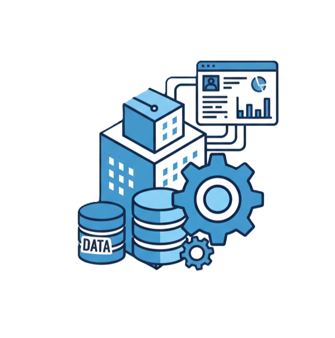
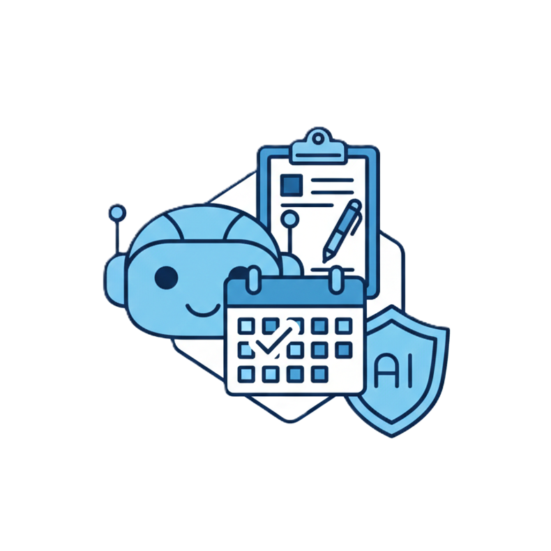
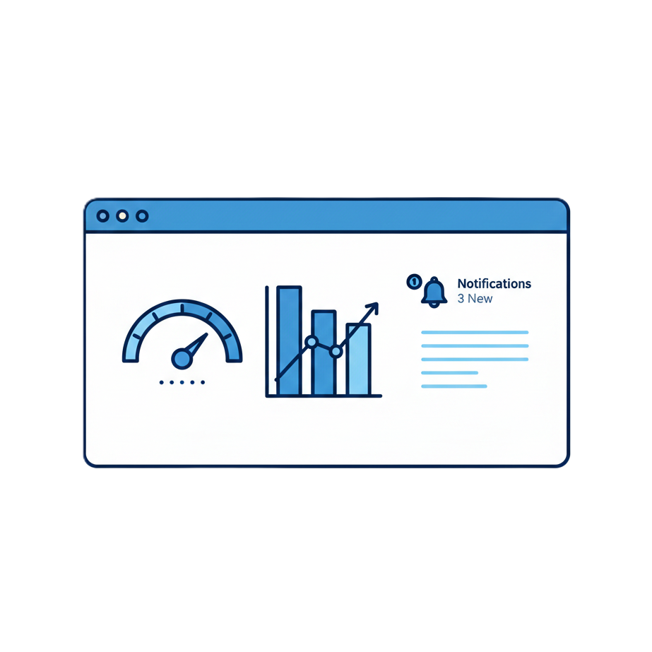

Products
Machine Learning Framework
AIONIO’s framework is a lakehouse‑centric, end‑to‑end platform that handles every stage of the data‑and‑AI lifecycle. The platform speeds up on‑prem development, taking projects from prototype to production quickly. It covers data ingestion and processing to model training, deployment, and operations—while remaining user‑friendly and powerful without encountering limitations in product development and operations. It gives full control and lineage over data and code. With an open‑source‑first philosophy and no login barrier, it offers a fast time‑to‑market that is especially appealing to startups, SMEs and research institutions looking for a rapid, low‑barrier transition to AI.

AI Agents
AIONIO's AI agents perform specific business tasks, running on‑prem or in the cloud with stringent data‑safety guarantees that prevent leakage. Features include safety chatbots and smart document management. By taking over routine work and integrating across multiple disciplines, they free human talent for higher‑value innovation. AIONIO can redesign existing processes and embed AI agents to accelerate product development, a critical advantage for early‑stage companies focused on breakthrough solutions.

Dashboards
Customer‑centric dashboards that turn data into actionable insights for monitoring and decision‑making. Built from trusted commercial or open‑source providers, each dashboard is tailored to the client’s needs. Customizable metrics, real-time alerts and detailed reports empower teams to make informed decisions.

Training
Tailored courses for students, SMEs, academic bodies and enterprises cover fundamentals to advanced topics. Covering computer science fundamentals, statistics, data processing and AI development best practices, the curriculum blends theory with hands‑on labs. Each course is customised to the learner’s context, ensuring that participants gain the knowledge and skills needed to build and maintain real‑world AI solutions.